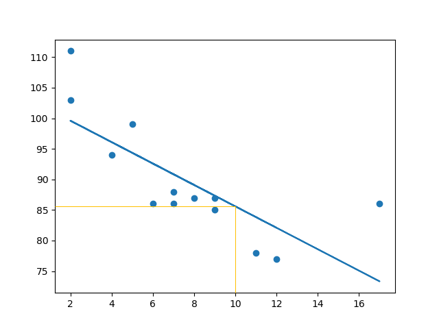
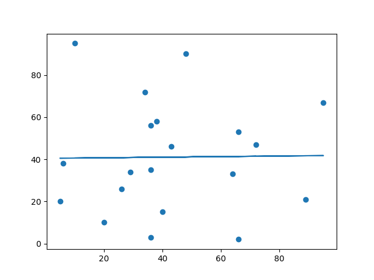

Linear Regression
Regression
The term regression is used when you try to find the relationship between variables.
In Machine Learning, and in statistical modeling, that relationship is used to predict the outcome of future events.
Linear Regression
Linear regression uses the relationship between the data-points to draw a straight line through all them.
This line can be used to predict future values.

In Machine Learning, predicting the future is very important.
How Does it Work?
Python has methods for finding a relationship between data-points and to draw a line of linear regression. We will show you how to use these methods instead of going through the mathematic formula.
In the example below, the x-axis represents age, and the y-axis represents speed. We have registered the age and speed of 13 cars as they were passing a tollbooth. Let us see if the data we collected could be used in a linear regression:
Example: Start by drawing a scatter plot:
import matplotlib.pyplot as plt
x = [5,7,8,7,2,17,2,9,4,11,12,9,6]
y = [99,86,87,88,111,86,103,87,94,78,77,85,86]
plt.scatter(x, y)
plt.show()
Result:

Example: Import scipy and draw the line of Linear Regression:
import matplotlib.pyplot as plt
from scipy import stats
x = [5,7,8,7,2,17,2,9,4,11,12,9,6]
y = [99,86,87,88,111,86,103,87,94,78,77,85,86]
slope, intercept, r, p, std_err = stats.linregress(x, y)
def myfunc(x):
return slope * x + intercept
mymodel = list(map(myfunc, x))
plt.scatter(x, y)
plt.plot(x, mymodel)
plt.show()
Result:
Example Explained
Import the modules you need.
You can learn about the Matplotlib module in our Matplotlib Tutorial.
You can learn about the SciPy module in our SciPy Tutorial.
import matplotlib.pyplot as plt
from scipy import stats
Create the arrays that represent the values of the x and y axis:
x = [5,7,8,7,2,17,2,9,4,11,12,9,6]
y = [99,86,87,88,111,86,103,87,94,78,77,85,86]
Execute a method that returns some important key values of Linear Regression:
slope, intercept, r, p, std_err = stats.linregress(x, y)
Create a function that uses the slope and intercept values to return a new value. This new value represents where on the y-axis the corresponding x value will be placed:
def myfunc(x):
return slope * x + intercept
Run each value of the x array through the function. This will result in a new array with new values for the y-axis:
mymodel = list(map(myfunc, x))
Draw the original scatter plot:
plt.scatter(x, y)
Draw the line of linear regression:
plt.plot(x, mymodel)
Display the diagram:
plt.show()
R for Relationship
It is important to know how the relationship between the values of the x-axis and the values of the y-axis is, if there are no relationship the linear regression can not be used to predict anything.
This relationship - the coefficient of correlation - is called r.
The r value ranges from -1 to 1, where 0 means no relationship, and 1 (and -1) means 100% related.
Python and the Scipy module will compute this value for you, all you have to do is feed it with the x and y values.
Example: How well does my data fit in a linear regression?
from scipy import stats
x = [5,7,8,7,2,17,2,9,4,11,12,9,6]
y = [99,86,87,88,111,86,103,87,94,78,77,85,86]
slope, intercept, r, p, std_err = stats.linregress(x, y)
print(r)
Note: The result -0.76 shows that there is a relationship, not perfect, but it indicates that we could use linear regression in future predictions.
Predict Future Values
Now we can use the information we have gathered to predict future values.
Example: Let us try to predict the speed of a 10 years old car.
To do so, we need the same myfunc() function from the example above:
def myfunc(x):
return slope * x + intercept
Example: Predict the speed of a 10 years old car:
from scipy import stats
x = [5,7,8,7,2,17,2,9,4,11,12,9,6]
y = [99,86,87,88,111,86,103,87,94,78,77,85,86]
slope, intercept, r, p, std_err = stats.linregress(x, y)
def myfunc(x):
return slope * x + intercept
speed = myfunc(10)
print(speed)
The example predicted a speed at 85.6, which we also could read from the diagram: 
Bad Fit?
Let us create an example where linear regression would not be the best method to predict future values.
Example: These values for the x- and y-axis should result in a very bad fit for linear regression:
import matplotlib.pyplot as plt
from scipy import stats
x = [89,43,36,36,95,10,66,34,38,20,26,29,48,64,6,5,36,66,72,40]
y = [21,46,3,35,67,95,53,72,58,10,26,34,90,33,38,20,56,2,47,15]
slope, intercept, r, p, std_err = stats.linregress(x, y)
def myfunc(x):
return slope * x + intercept
mymodel = list(map(myfunc, x))
plt.scatter(x, y)
plt.plot(x, mymodel)
plt.show()
Result: 
And the r for relationship?
Example: You should get a very low r value.
import numpy
from scipy import stats
x = [89,43,36,36,95,10,66,34,38,20,26,29,48,64,6,5,36,66,72,40]
y = [21,46,3,35,67,95,53,72,58,10,26,34,90,33,38,20,56,2,47,15]
slope, intercept, r, p, std_err = stats.linregress(x, y)
print(r)
The result: 0.013 indicates a very bad relationship, and tells us that this data set is not suitable for linear regression.